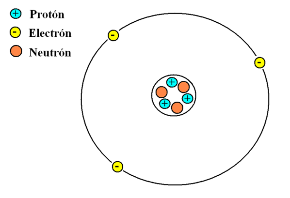

Los átomos no se pueden ver a simple vista.
¿Por qué los átomos no se pueden ver a simple vista?
Los átomos son las unidades más pequeñas de la materia.
Todo lo que nos rodea "el aire, el agua, nuestro cuerpo, los planetas está formado por átomos".
Sin embargo, no podemos verlos a simple vista.
¿Por qué?
1- Su tamaño es extremadamente pequeño
Un átomo mide aproximadamente 0.1 nanómetros (0.0000000001 metros).
Para que te des una idea:
En la punta de un lápiz caben millones de átomos alineados.

Una sola hebra de cabello humano tiene un grosor de alrededor de 1 millón de átomos de ancho.
Nuestros ojos no están hechos para detectar cosas tan pequeñas.
Solo podemos ver objetos que reflejan o emiten luz dentro del rango visible (longitudes de onda de 400 a 700 nanómetros),
y un átomo es miles de veces más pequeño.